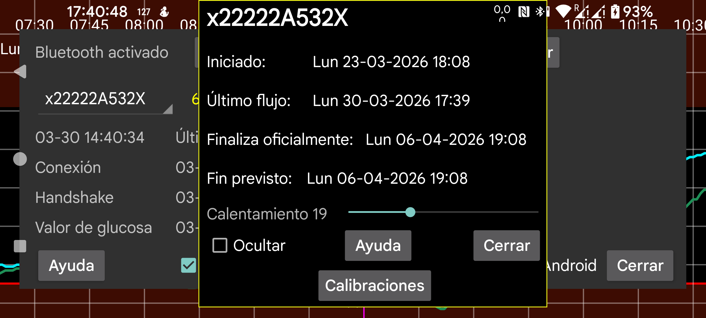

ar de es hi it ja ko nl ru uk uz en
Muestra el inicio del sensor, el último valor de Stream, el último escaneo y las horas esperada y oficial de finalización.
Calentamiento: en sensores Sibionics y Aidex X puedes cambiar el número de minutos del periodo de calentamiento. Durante ese periodo, todas las funciones ignoran los datos: la curva en pantalla, las estadísticas, los datos exportados y los datos visibles en el servidor web. Esto también se aplica retroactivamente.
Ocultar: si está activado, esta curva se oculta. Además de desmarcar la casilla, también puedes volver a hacerla visible pulsando Visible en la parte inferior derecha de la pantalla.
Calibraciones: si has indicado la etiqueta de glucosa en sangre en menú izquierdo → Ajustes → Calibración y has introducido mediciones capilares no excluidas mediante menú central izquierdo → Cantidad, puedes pulsar Calibraciones para ver la lista de calibraciones realizadas. Consulta también: https://www.juggluco.nl/Juggluco/index.html#calibration
Activar: para sensores ya terminados se muestra el botón Activar. Pulsándolo puedes volver a usar el sensor sin escanear de nuevo la matriz de datos del envase. También puede usarse con sensores Libre 2 y 3, pero si escaneaste el sensor con Juggluco en otro teléfono, tendrás que volver a escanearlo por NFC para recuperarlo en ese teléfono.